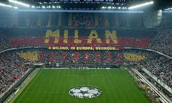
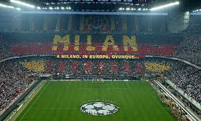

The skyline of Milan, Italy, is a captivating blend of historic and modern architecture that reflects the city's dynamic character.
Among the modern structures punctuating the skyline is the sleek and avant-garde Pirelli Tower, a symbol of Milan's economic prowess and design innovation.
The Bosco Verticale (Vertical Forest) is another notable feature, showcasing the city's commitment to sustainable living with its residential towers adorned with greenery.
The skyscrapers of Porta Nuova, such as the Unicredit Tower, contribute to Milan's contemporary skyline, reflecting the city's role as a global financial and fashion hub.
At night, the cityscape comes alive with the illuminated city center and modern structures, creating a vibrant and cosmopolitan atmosphere.
Milan's elegant inner courtyards, known as "cortili," are hidden gems that offer a tranquil escape from the bustling urban life.
Enclosed within the city's historic buildings, these courtyards are characterized by a harmonious blend of architectural beauty and serene surroundings.
Often adorned with intricately designed facades, ornate balconies, and charming arcades, these courtyards showcase Milan's rich cultural and artistic heritage.
The elegant combination of stone, wrought iron, and greenery creates a peaceful oasis within the heart of the city. Some of these courtyards are remnants of ancient palaces, providing a glimpse into Milan's noble past.
Exploring these hidden spaces allows visitors to appreciate the architectural details and historical significance of the buildings surrounding them.
The courtyards often feature well-maintained gardens, providing a welcome respite where one can relax and enjoy the ambiance.
Whether stumbled upon while wandering through narrow streets or intentionally sought out, Milan's inner courtyards reveal a quieter, more contemplative side of the city.
They serve as reminders of the interconnectedness between Milan's past and present, offering a delightful contrast to the vibrant energy found in its more prominent urban areas.
Milan, renowned as the "Fashion Capital of the World," epitomizes sartorial mastery and style innovation.
With a rich fashion legacy dating back to the 20th century, the city hosts prestigious events like Milan Fashion Week, setting global trends.
The Quadrilatero della Moda showcases flagship stores of iconic brands, highlighting Milan's role as a fashion powerhouse.
The Milanese, known for their natural flair for style, turn the city's streets into a daily runway, seamlessly blending classic elegance with contemporary trends.
In essence, Milan's fashion influence extends beyond runways, shaping global fashion with its commitment to excellence and a passion for the art of dressing.
Milan pulses with a passionate sports culture, led by the iconic AC Milan football club. The legendary San Siro Stadium hosts thrilling matches, captivating fans with the city's deep football heritage.
Beyond football, Milan embraces diverse sports, hosting international tennis tournaments and Formula 1 races.
The city's parks and recreational areas invite active participation, making sports an integral part of Milan's dynamic and energetic atmosphere.


 
